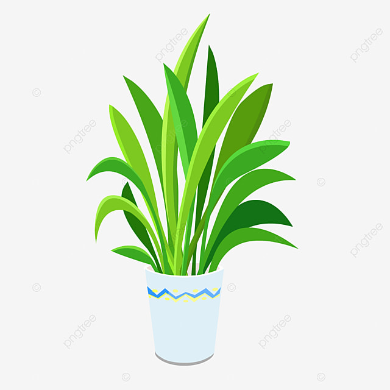
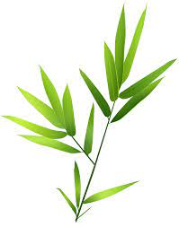
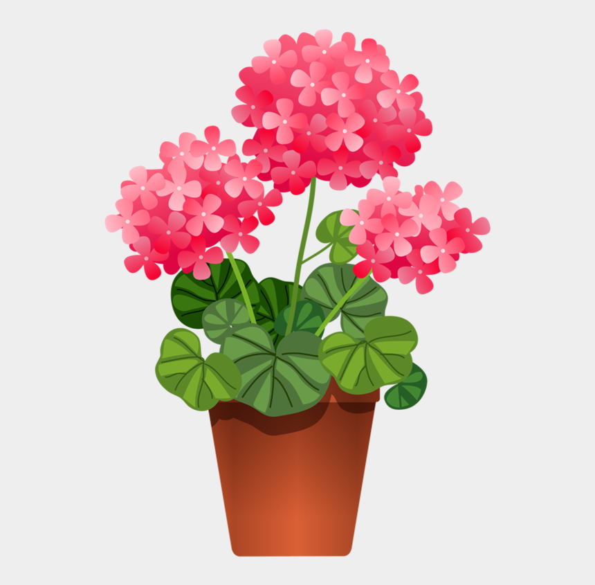
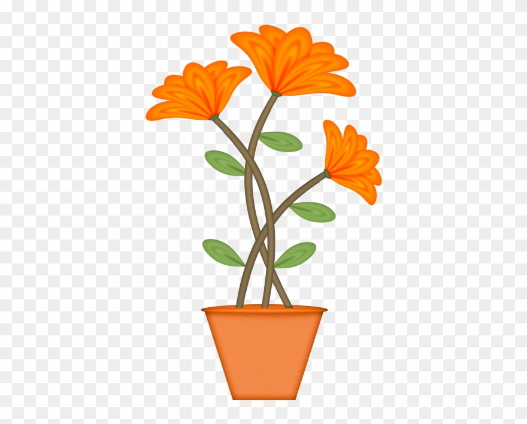
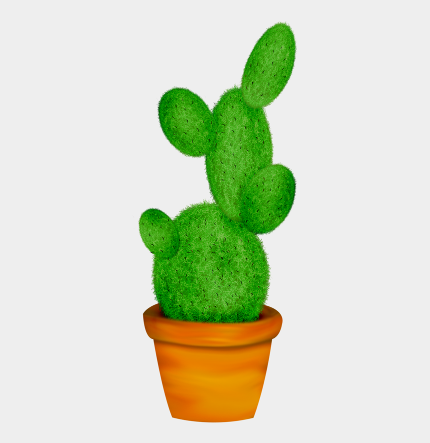

Home
Knowing what your plants need!
Cape Aloe
Common name- Cape Aloe, Bitter Aloe, Red Aloe, Cape Aloe, Alligator Jaw Aloe
Scientific name-Aloe ferox
Scientific classification- aloes
Origin-Cape aloe is is one of those, and it's indigenous to South Africa's Cape coastal region, from the Western Cape province to the southern parts of KwaZulu-Natal in the east.
Water- This Aloe can tolerate long periods of drought but looks better with a little water
Temp- Aloe ferox can withstand temperatures as low as 20 to 50 °F (-6.7 to 10 °C), USDA hardiness zones 9a to 11b. Watering: These succulents do need regular watering but are very tolerant of drought conditions for short periods.
Sunlight- “Cape Aloe” is not cold hardy, so if you live in a zone that gets colder than 20° F (-6.7° C), it's best to plant this succulent in a container that can be brought indoors. It does well in full to partial sun. Plant in an area of your garden that gets 6 hours of sunlight a day.
Indoor outdoor- that can be brought indoors. It does well in full to partial sun. Plant in an area of your garden that gets 6 hours of sunlight a day.
Button Plants

Common name- toothache plant, paracress, Sichuan buttons, buzz buttons, ting flowers and electric daisy
Scientific name- Cotula coronopifolia
Scientific classification- Sphenosciadium capitellatum
Origin- It is native to Brazil.
Temp- Plants are hardy outside where winter temperatures do not drop below 25 degrees Fahrenheit, but even at that temperature the foliage will be killed by frost.
Sunlight- Light. Bachelor's buttons prefer full sun, but they'll still do well with a bit of shade in the afternoon. Shady conditions can make the plants leggy and prone to flopping, which may require staking
Indoor outdoor- Though native to New Zealand and Australia, button ferns can be grown outdoors in USDA growing zones 9 through 11. Though they can be slightly fickle when grown indoors, with enough care and attention to its needs, a button fern makes an excellent houseplant.
String of tears
Common name- Senecio herreanus
Scientific name- Senecio rowleyanus
Scientific classification- Senecio rowleyanus
Origin- Curio citriformis, syn. Senecio citriformisis, also known as string of tears, is a trailing succulent plant in the sunflower family native to South Africa that grows in rocky outcrops in clay soils
Temp- Temperature. String of Pearls succulent should be kept at average indoor temperature of 70° - 80° degrees Fahrenheit. During winter, keep the plant at cool temperature - around 55° – 60° degrees Fahrenheit.
Sunlight- The String of Tears does best in partial shade or indirect bright light rather than in the full direct sunlight. As a houseplant, it does well in an east-facing or west-facing sunny window. If you're growing the plant outdoors, you should bring it in before the cold months of winter.
Indoor outdoor- The String of Tears does best in partial shade or indirect bright light rather than in the full direct sunlight. As a houseplant, it does well in an east-facing or west-facing sunny window. If you're growing the plant outdoors, you should bring it in before the cold months of winter.
Elephants Foot
Common name- Elephantopus carolinianus
Scientific name- Dioscorea elephantipes
Scientific classification- Amorphophallus paeoniifolius
Origin- It is native to semiarid areas in southern Africa.
Temp- The ideal temperature range for active growth period is between 10°C (50°F) and 24°C (75°F) and for the rest period between 4°C (39°F) and 18°C (64°F), but these hardy plants are quite tolerant of extremes and frequently thrive in conditions which are quite unsuitable for other plants.
Sunlight-
Indoor outdoor- Ponytail palms are a unique-looking, long-lived indoor plant that thrives on ... and coloration has granted it another strange nickname: the Elephant's Foot Palm.
Disa Uniflora Bergius
Common name- Red Disa, Bakkiesblom (a), Disa (a), Flower Of The Gods (e), Large Red Disa (e), Pride-of-table-mountain (e), Red Disa (e), Rooidisa (a), Watervalblom (a)
Scientific name- Disa uniflora P.J.Bergius
Scientific classification- ORCHIDACEAE
Origin- Natural distribution. The Disa uniflora Bergius is indigenous to the Western Cape of South Africa and is found in perennially moist conditions. These are often near waterfalls or streams, as well as on the wetter parts of the iconic Table Mountain in Cape Town and other local mountain ranges.
Temp- 10 to 26 degrees Celsius
Sunlight- Disas prefer partial shade, but good light conditions are essential for flowering and to enhance rich flower colour. In nature Disa uniflora multiplies vegetatively by producing stolons that develop into new plants.
Indoor outdoor- Use in the garden. The Disa uniflora Bergius is so lovely that it is often appreciated simply for its ornamental value. It does not have any significant medicinal or practical uses in the home or garden.
King Protea

Common name- Protea cynaroides
Scientific name- Protea cynaroides
Scientific classification- Protea cynaroides
Origin- South Africa
Temp- The key to the successful growing of Proteas is to observe where they grow in the wild. Proteas do not grow in excessively damp areas (over 3 m of rain per year) nor in hot humid areas (greater than 80% humidity with temperatures over 30°C for several days).
Sunlight- Plant your proteas in a position with full sunlight. They need lots of sunshine in order to produce flowers. Protea plants need to be well established before they can be truly drought tolerant. Directly after planting, your proteas should be watered in thoroughly.
Indoor outdoor- As can be expected from their natural coastal and mountainous habitats, they are used to lots of air flowing around them and plenty of sun. They are ideally suited to low-maintenance and water-wise gardens, and are a magnet for nectar-loving birds.
Mother-in-law tongue

Common name- Snake Plant
Scientific name- Dracaena trifasciata
Scientific classification- Dracaena trifasciata
Origin- Dracaena trifasciata is a species of flowering plant in the family Asparagaceae, native to tropical West Africa from Nigeria east to the Congo. It is most commonly known as the snake plant, Saint George's sword, mother-in-law's tongue, and viper's bowstring hemp, among other names.
Temp- Temperature: Average warmth is fine of approximately 60-75°F (15-24°C) and no lower than 50°F (10°C). Light: The mother in laws tongue is well known for coping with direct sun and low light conditions, although bright light conditions with some sun light and shade is preferred.
Sunlight- This plant loves ample sunlight! Place it near a window to give it bright, indirect sunlight. This plant can also tolerate direct sunlight, but not for an extended period of time or else the leaves will burn. Mother-in-law's tongue can also tolerate low-light conditions, but growth may slow or leaves may turn yellow.
Indoor outdoor- Mother-in-law's tongue is one of the easiest houseplants. The plants have rootstocks, out of which thick, tall, sword-like shape leaves with succulent characteristics grow. The name, Mother-in-law's tongue, refers to the pointed tips of the leaves, which symbolises the sharp tongue of the Mother-in-law!
Wild Banana

Common name- Strelitzia
Scientific name- Musa acuminata
Scientific classification- Musa acuminata
Origin- The Strelitzia, or more commonly, the Wild Banana or Bird of Paradise is a popular house plant from South Africa.
Temp- Temperature: Moderate temperatures all year round of 21-32 °C. Soil: Any good potting soil mix will work for the Strelitzia.
Sunlight- Light: Plenty of bright light. Our variety is "soft grown" in a greenhouse, so they won't tolerate harsh, direct sunlight. Some softer direct morning sun will be fine. Too little light and the Wild Banana won't be happy.
Indoor outdoor- Like outdoor banana plants, an indoor banana plant needs rich, humus-like and well-draining soil as well as plenty of sunlight. In fact, indoor banana trees require bright light for about 12 hours or so for most varieties. However, you need to protect the banana plant from getting too hot to prevent scorching.
Spatula-leaf crassula
Common name- spathulata
Scientific name- spathulata
Scientific classification- Crassulaceae
Origin- This species is native to South Africa (Eastern Cape, Western Cape, and KwaZulu-Natal).
Temp- Soil: They are not particular about soil pH, but Crassulas require very porous soil with excellent drainage. Hardiness: Crassula spathulata can withstand temperatures as low as 20 to 50 °F (-6.7 to 10 °C), USDA hardiness zones 9a to 11b. Watering: These plants have typical watering needs for succulents.
Sunlight- They grow very well in semi-shaded areas but can also grow in full sun; the leaves turn slightly red when exposed to too much sunlight.
Indoor outdoor- Spatula-leaf Crassula (Crassula spathulata)
Naturally found on forest margins, she attracts bees and butterflies and is one of HAPPY BY NATURE's most popular easy-care indoor plants
Polished ox-tongue

Common name- Gasteria Plant Profile
Scientific name- Gasteria (Gasteria spp.)
Scientific classification- Gasteria pillansii
Origin- There are twenty plus Gasteria species native to the Cape area of South Africa
Temp- Gasteria plants generally like warm summers and slightly cool winters (down to 50 degrees Fahrenheit).
Sunlight- They prefer partial or dappled shade, so plant them on the shady side of rocks or underneath shrubs. They grow well in combination with other succulent plants.
Indoor outdoor- The Gasteria plant is an attractive group of succulent plants from South Africa grown as houseplants, related to Aloe caring and growing.